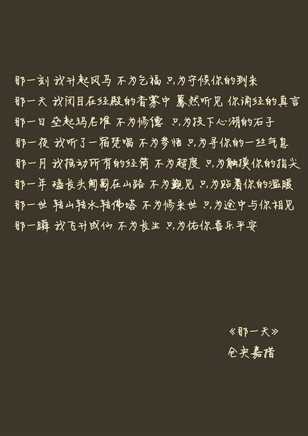

作品歧译
藏文中，所谓“仓央嘉措情歌”，本意是“仓央嘉措道歌”或“仓央嘉措诗集”。 在人们的想象中，仓央嘉措是一位向往世俗生活、离经叛道的情僧，“在那东方山顶上/升起了皎洁的月亮/娇娘的脸蛋/浮现在我心上”、“第一最好不相见，如此便可不相恋/第二最好不相知，如此便可不相思”等情诗被人们广为传诵。而真实的仓央嘉措到底什么样，在这几句诗外，人们又了解他多少？
事实上，不是“情歌（杂鲁）”，而是“道歌（古鲁）”，因为原文的题目是“仓央嘉措古鲁”而并非“仓央嘉措杂 鲁”。在藏语里，“杂鲁”是有规范的，“杂”是名副其实的“情”。而“古鲁”的含义是“道歌”，含劝诫意义的宗教道歌。所以，最初翻译仓央嘉措诗歌的人，不论怎么权威，其实他都很失败，因为单在诗歌题目的翻译上，他就犯了错误，以致以讹传讹到今天。而对仓央嘉措诗歌内容的翻译，更有不少歪曲历史、扭曲事实之处，甚至置真正的西藏文化及其宗教的意义于不顾，事实上扭曲了这些诗歌的本意。
